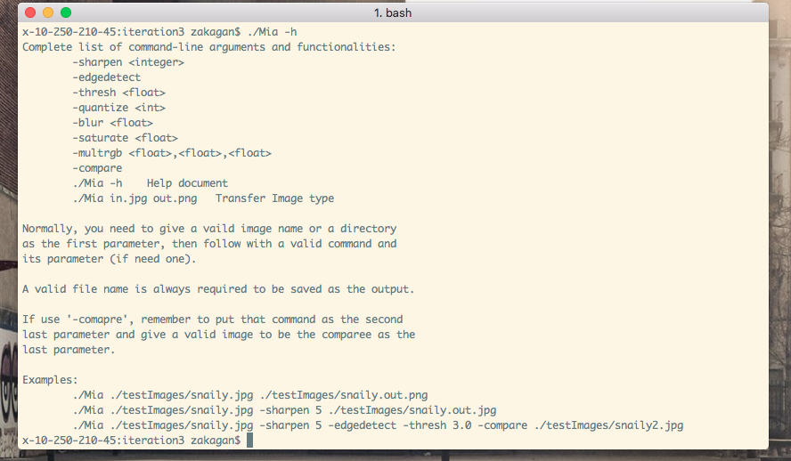
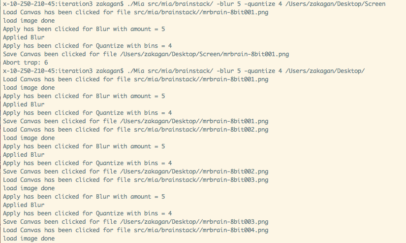
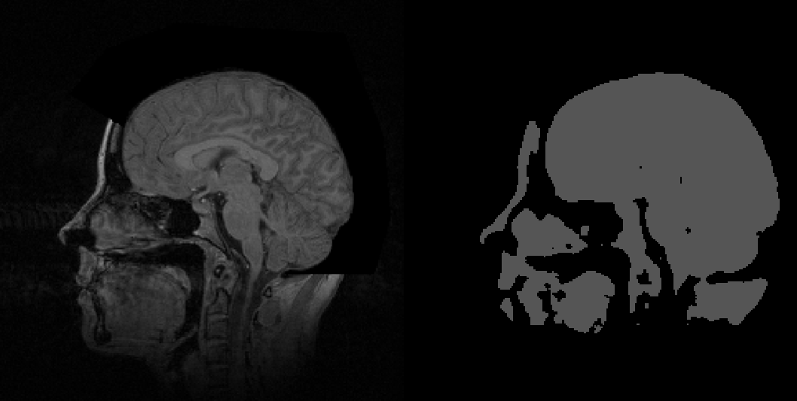

In addition to having a powerful GLUI, Mia can also be used on the command line. This feature set is useful especially when making a large number of similar adjustments to an image.
This tutorial will cover a series of such modifications using the command line to process CT scans. By following this example, soon you will be able to make your own edits via commandline. Then you’ll be the envy of radiologists everywhere. Don’t think mea culpa, think Mia!
The best way to begin is by checking the Help document, which is as easy as typing ./Mia -h in the command line.
The above help documentation lists every availible operation, and how to execute them. The rest of this tutorial will cover a specific example of what can be achieved with the Mia command line.
Each command needs three componenets:
A source image or directory.
At least one operation, given in the proper format
A destination image or directory. Note that image given sources must be saved as images with PNG or JPEG extensions, and directory sources must be given directory destinations.
The Mia commandline can opperate both on images and recursively on directories. It is this second functionality that will be leveraged to adjust an entire image deck of CT scans. Additionally, multiple different opperations can be specificed in each line. These two properties allow for powerful one-line commands.
By putting these building blocks together you get the following format: ./Mia <source> <opperation(s)> <destination>
The following example one line command will use two opperations on a directory of images, and save them to a new directory. First the blur opperation will be called (with a blur factor of 5 out of 20) to reduce image noise. Then the quantize command will be called with 4 bins, reducing the color space to 4 per color compenent (RGB).
the command itself looks like this: ./Mia src/mia/brainstack/ -blur 5 -quantize 4 src/mia/newbrainstack/
The above is what the terminal looks like with the Mia commandline running, and below is a comparison of two images, compared before and after the command was run.
